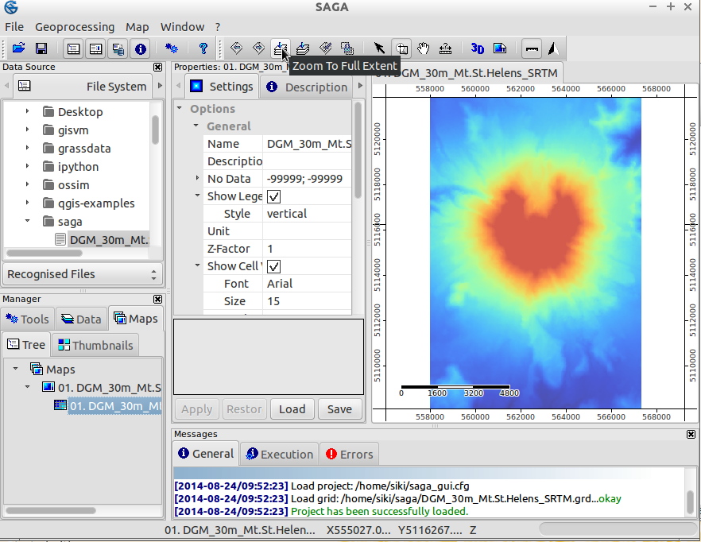
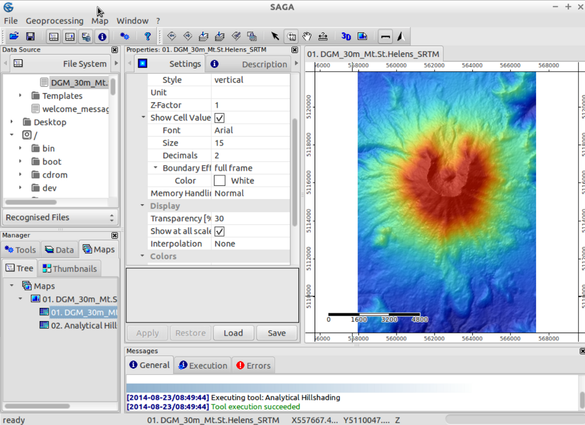

SAGA GIS 快速入门¶
启动¶
在 OSGeo Live 中运行 SAGA GIS，点击桌面的 SAGA 图标即可。
启动后 SAGA 将显示三个窗口，分别是主窗口、对象属性窗口和信息窗口。对象属性窗口中的信息会根据选择对象的不同而变化。

读取数据¶
在 SAGA 界面的 File|Grid|Load Grid 菜单可以选择读取 /home/user/saga/DGM_30m_Mt.St.Helens_SRTM.grd 栅格文件。信息窗口将显示操作的结果，例如 Load Grid: DGM_30m_Mt.St.Helens_SRTM.grd...okay 表示操作成功。读取后该数据会出现在主窗口的数据（data）选项卡，位列对应栅格系统之下。
本例的栅格系统信息为 30;312x 458y; 557970x 5108130y 。第一个数字意为栅格分辨率 30m 后两个为行列数，最后两个为原点坐标，以左下角为准。在属性窗口的描述（description）选项卡显示了进一步的信息，包括数值类型（此处为 FLOAT 浮点）、数值范围、基本统计信息、内存占用等。
显示数据¶
双击数据集即可开启一个新的地图窗口渲染显示该数据集。窗口将显示左上角的地理坐标，右侧及下侧有以地图单位标注的标尺。光标位置的地理信息显示在界面底部。此处 Z 值显示所选栅格表达的高程数据。
使用工具栏的导航选择工具可以平移和缩放。默认选择的为缩放（zoom），左键放大，右键缩小，拖拽放大至选择区域。放大到一定程度会显示像元数值。选择平移工具（pan）可以推拽平移。另有缩小至全局视图（Zoom to Full Extent）等操作。
Tip
若缩放尺寸太大以致难以判断位置，点击缩小至全局视图即可。
创建坡面阴影图¶
通过阴影图运算可以增强地形显示的效果。在主窗口 Modules 选项卡打开 Terrain Analysis - Lightning, Visibility 并选择 Analytical Hillshading 模块，在设置（settings）选项卡设置参数。（说明/description 选项卡显示了该模块的功能和配置信息）在 Grid system 选择载入的 Mt. St. Helens 数据，在 Elevation 选择该数据集，在 Shading Method 选择 Standard 并点击 Apply 执行。
完成后，主窗口将显示操作形成的新数据集。双击 ‘Analytical Hillshading’ 并选择“New”将以新窗口显示数据。查看后关闭。
重新双击该数据集，但选择 ‘Add layer to selected map’ 可以在原窗口中叠加新数据集。
在主窗口的 Maps 选项卡列举了地图窗口及其数据集，渲染顺序是从下到上。右击 ‘Analytical Hillshading’ 数据集并选择 Move To Bottom 移动到底部，使得原始的高程图暴露出来。在原始高程数据集的设置（settings）选项卡设置透明度（transparency）为 30 。这样的显示效果为有坡向阴影叠加的高程。
请尝试不同的透明度与渲染方式设定。若不改变输出设置，输出数据集会被覆盖，因此输出结果将会立刻显现。
{kind=link}
{kind=link}
创建等高线¶
作为 SAGA 矢量功能的示例，这里以高程数据创建等高线。在主窗口的 modules 选项卡选择 Shapes - Grid | Contour Lines From Grid 或者在菜单选择 Modules|Shapes|Grid|Vectorization 可以启动这一功能。选择栅格系统及其下的高程数据集，在等高线间距（equidistance）输入所需的值（此处建议 50m）。执行后，新的矢量数据将显示在主界面中。在一个地图视图中打开它。默认状态下所有等高线具有相同的颜色。打开这一数据集的选项并选择 Display: color classification ，将分类（classification）方式改为渐变色阶（graduated color），选择一个配色方案并确认。
{kind=link}
保存数据¶
在主界面打开数据（data）选项卡，右击需要保存的数据集可以将其保存。SAGA 默认将栅格系统保存为自有的 *.sgrd ，shp 则为标准的 ESRI *.shp 。选择 File|Project|Save Project 将保存工程文件，以记录所有视图和设置，并提供保存数据集的选项。
输入/输出数据¶
一些列不同的模块可以用于输入和输出数据。其中最为常用的是 Import/Export GDAL/OGR（modules|file|GDAL/OGR menu）。包括 geotiff 在内的众多栅格数据均由其支持。同样它可以用于对这些格式输出。
Tip
从 1.7.0 版开始，SAGA GIS 栅格系统文件就获得了 GDAL 的支持。因此可以在其它使用 GDAL 的系统中打开。请注意打开这一文件时对象应选择 *.sdat 文件而非 *.sgrd 。
本例使用的是 SRTM 数字高程模型靠近巴塞罗那的一份切片。
待导入的文件是 /home/user/data/raster 目录下的 SRTM_u03_n041e002.tif 。使用 modules|file|GDAL/OGR menu 的 Import/Export GDAL/OGR 模块选择该文件可以实现导入。
导入后在新视图打开该数据集。此时渲染的结果是一片灰色。将光标移动到海岸线上的某些像素，可以在状态栏看到其值很低（-32768）。
这些像素是空值像素。在属性窗口中的空值（nodata）设定空值上限（maximum no data value）为 -32768 。在主窗口右击该数据集并选择 ‘Classification|Set Range to minimum maximum’ 可以重置其色阶。
接下来可以同前述一样创建等高线图。您也可以继续探索 SAGA 的其它功能。